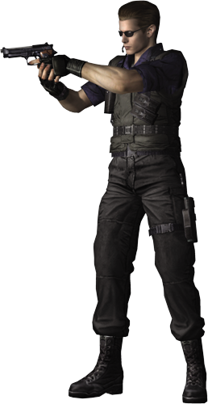

ALBERT WESKER
Captain of S.T.A.R.S. and leader of Alpha Team, his calm and coolness in any situation makes him perfect for the position he assumes in the squadron. His trademark is his inseparable sunglasses, which he wears day and night. With the constant occurrences of mysterious murders in the mountains around Raccoon City, he orders an investigation and calls Bravo Team to follow the location. However, Bravo's helicopter suffers a strange breakdown and makes a forced landing in the middle of the forest. Wesker and his Alpha Team then proceed to the site on a mission to rescue the missing team.
